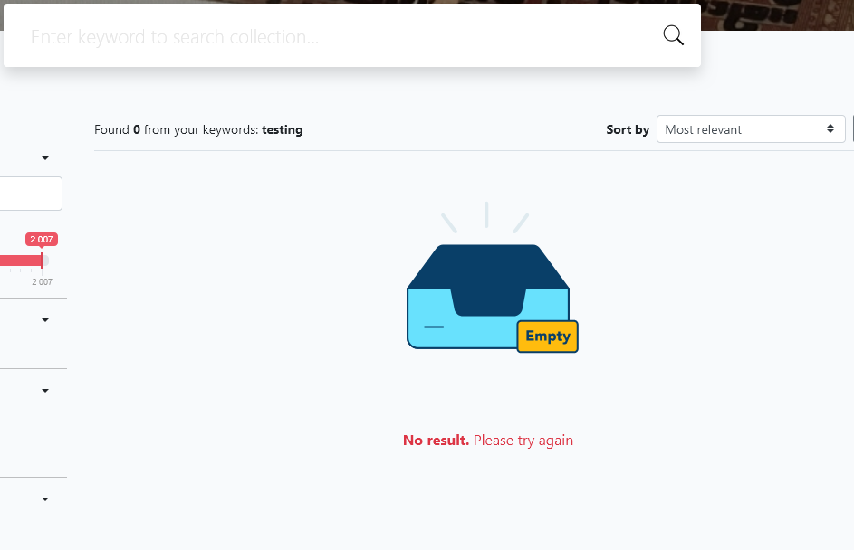
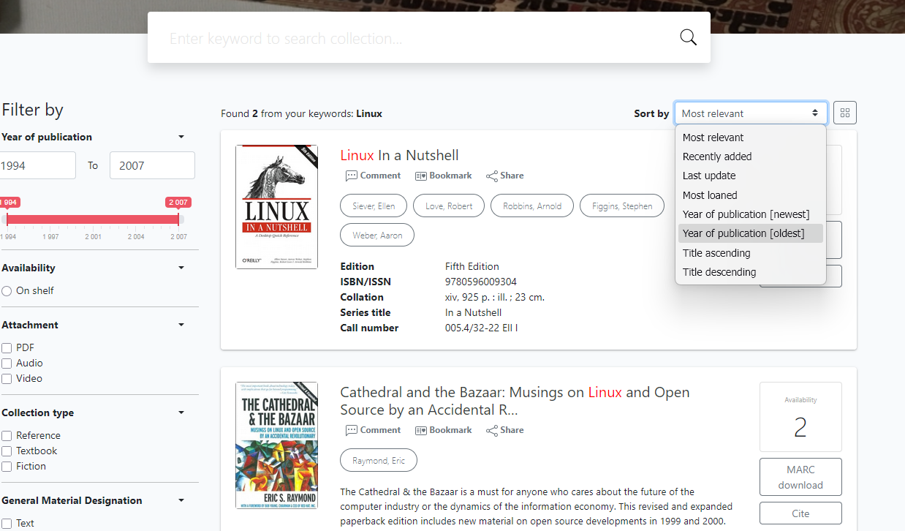
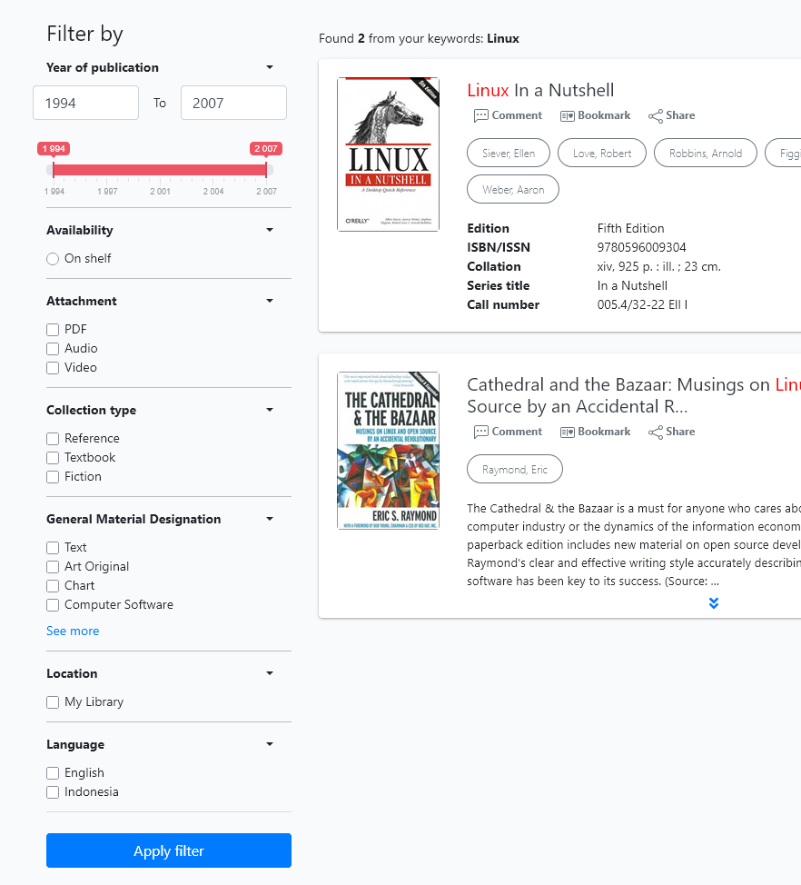
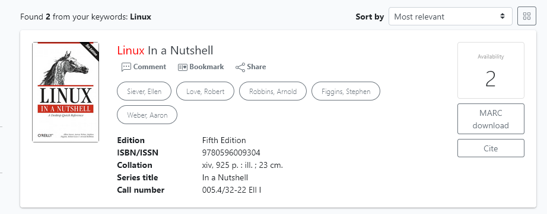
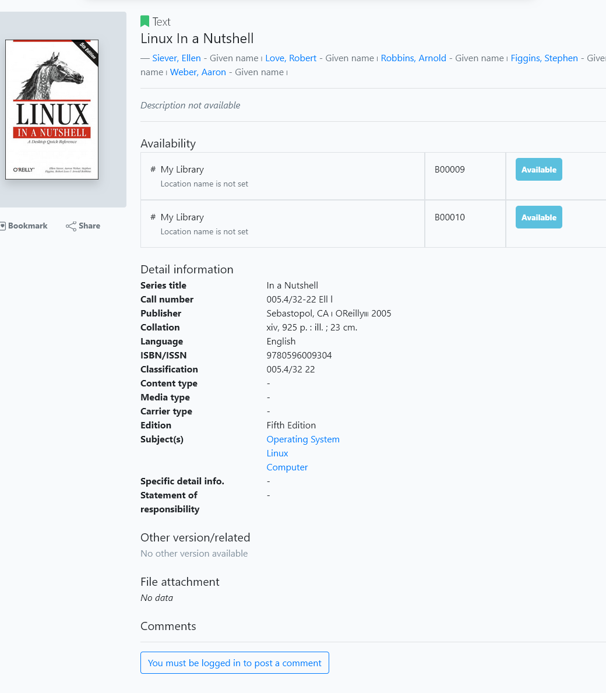

If no result is found from a search, the user is informed as below:

If results from a search are returned, the user has a number of options.
The default sorting of the returned results is by “Most relevant”, but a number of other sorting criteria can be applied from the drop-down menu, as shown:

Results can also be filtered via a wide range of criteria, including publication date-range, availability, whether there are attachments, the collection type, GMD, location, and language.

Each result presents a summary of cataloguing data of a title, an image of the title, and buttons for each author. Clicking an author button on a result will trigger a search for all additional titles by that author.

Clicking the Availability button ( which also displays the number of available copies), will Add to Basket that title, IF the library member is logged in. If they are not they will be redirected to the Member login.
Clicking the MARC download button will automatically download a MARC record ( *.mrc ) to the user’s default download location.
Clicking the Cite button will produce a pop-up with several bibliographic citations for the title in different formats. Users can cut and paste the result.
Clicking on a title in the results list will display full cataloguing data for that title, with its Authors and Subjects being hyperlinked to searches.

If the member is logged in they will be able to post comments / reviews for that title.
Buttons are also provided to allow logged-in members to Bookmark the title for future use and to Share the title details on WhatsApp, Telegram, or via a copied link.
Note: the Akasia OPAC search results are similar but with some variation in features. Akasia lacks the variety of sorting and filtering options, the user Basket feature is not accessible , and the social media options are different.